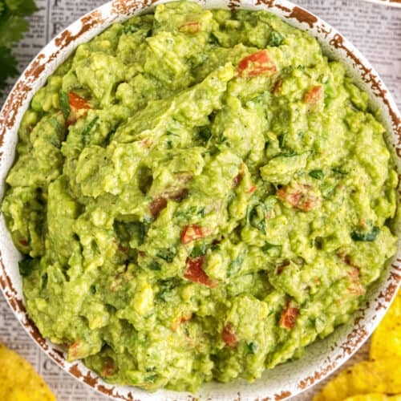

HOME
GUACAMOLE

Fresh, creamy, and bursting with flavor, this classic guacamole recipe blends ripe avocados with lime, cilantro, onion, and a touch of jalapeño for the perfect dip or topping.
Ingredients
- 5 avocados - peeled, pitted, and mashed
- 2 tablespoons fresh lemon juice
- ¾ cup minced green onion
- ½ cup minced fresh cilantro
- salt and pepper, to taste
Steps
- Stir together the avocado and lemon juice in a serving bowl; add the green onion and cilantro; mix well. Season with salt and pepper. Serve immediately or store covered in refrigerator with avocado pits in the bowl to keep from browning.
HOME